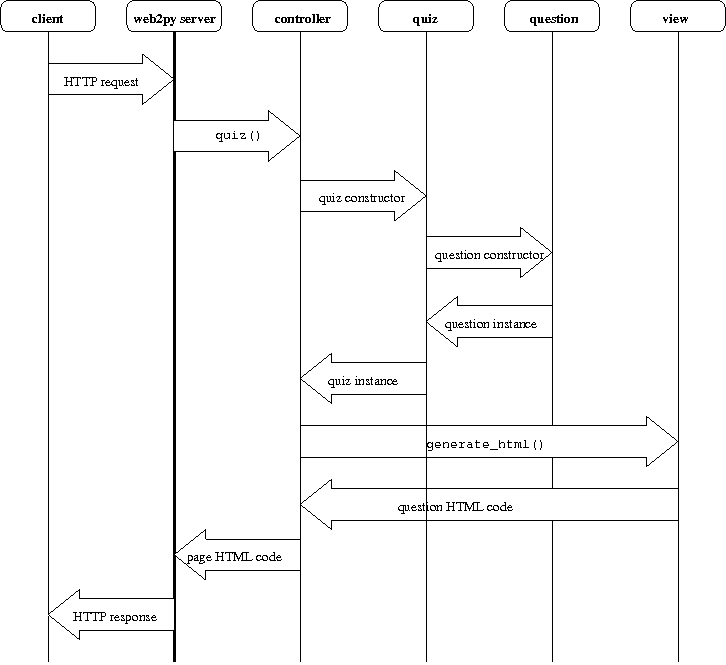

Start quiz message exchange diagram

- HTTP request
-
http://cdoku.seng.uvic.ca:8080/codeAct/ca_controller/quiz.html?quiz_spec=../quiz_specs/min_io_alone
Because the URL does not reference the
static/ directory, a dynamic HTML page is requested.
The URL parameter, quiz_spec=../quiz_specs/min_io_alone,
is available in the Python global variable request.
Specifically, requests['quiz_spec'] has value
'../quiz_specs/min_io_alone'.
quiz()-
invoke function
quiz() in
codeAct/controllers/ca_controller.py
- quiz constructor
-
invoke the constructor of class
quiz in
ca_quiz.py
- question constructor
-
invoke the constructor of class
question in
ca_question.py
generate_html()-
invoke function
generate_html() in
views/ca_controller/ca_question_html.py
- question HTML code
-
question presentation in HTML is returned by function
generate_html()
- page HTML code
-
HTML code of the page is return by function
quiz()
- HTTP response
-
web2py server sends the generated HTML as an HTTP response to the client